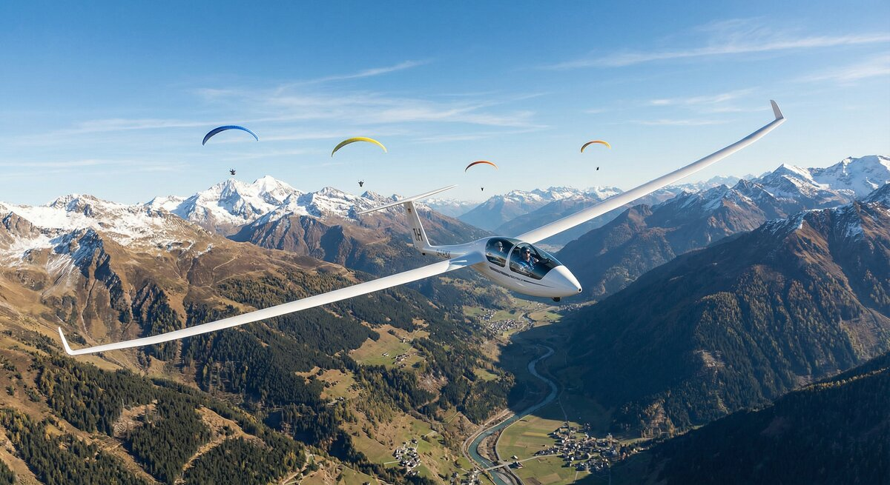

KestrelOne picks up the aircraft around you and puts them on the moving map you already fly with.
Install firmware How it worksKestrelOne shows you aircraft that are broadcasting their position. It does not make you visible to anyone else — your transponder does that, and nothing here changes it.
It also cannot see aircraft that transmit nothing at all, which on a quiet afternoon is a good many of them. Treat it as another pair of eyes, never as a reason to spend less time looking out of the window.
Three things, in a box that fits in a flight bag and runs on its own battery.

No installation, no wiring, no subscription. Charge it, switch it on, connect your tablet.
Decodes aircraft broadcasting on 1090 MHz. Those reporting a position appear on the map; those heard without one are listed separately rather than guessed at.

Standard GDL90 over WiFi, the same format commercial receivers use. If your app takes traffic from a portable receiver, it will take this.

Built-in GNSS and a barometer give your own position and pressure altitude, so nearby traffic is shown as height above or below you.

Internal battery with USB-C charging and a fuel gauge. Nothing to wire into the aircraft, nothing to certify, moves between aircraft freely.

An 868 MHz receiver is fitted for FLARM, OGN, PilotAware and FANET — the traffic that never appears on ADS-B. The hardware is in every unit; the decoding is still being written.
One status light answers "is it working?" at a glance, and a built-in web page shows traffic, signal quality and settings from any phone.
Firmware installs straight from this page over USB. Nothing to download, no tools to set up.
KestrelOne WiFi network from your phone or tablet.Ticking Erase device during install clears saved settings and WiFi credentials along with the firmware. Leave it unticked to keep them.
| Traffic reception | 1090 MHz ADS-B and Mode S — extended squitter, all-call and surveillance replies |
|---|---|
| Conspicuity reception | 868 MHz receiver fitted for FLARM, OGN, PilotAware, FANET and ADS-L in development |
| Transmission | None. Receive only. |
| Position | Multi-constellation GNSS with 1 PPS timing |
| Altitude | Barometric pressure altitude, 25 ft resolution |
| Output | GDL90 over WiFi (UDP 4000) — ownship, traffic and heartbeat |
| Network | Hosts its own access point, or joins an existing network |
| Power | Internal lithium cell, USB-C charging, battery gauge |
| Interface | Built-in web page for traffic, signal quality and settings |
| Updates | Installed from this page over USB |